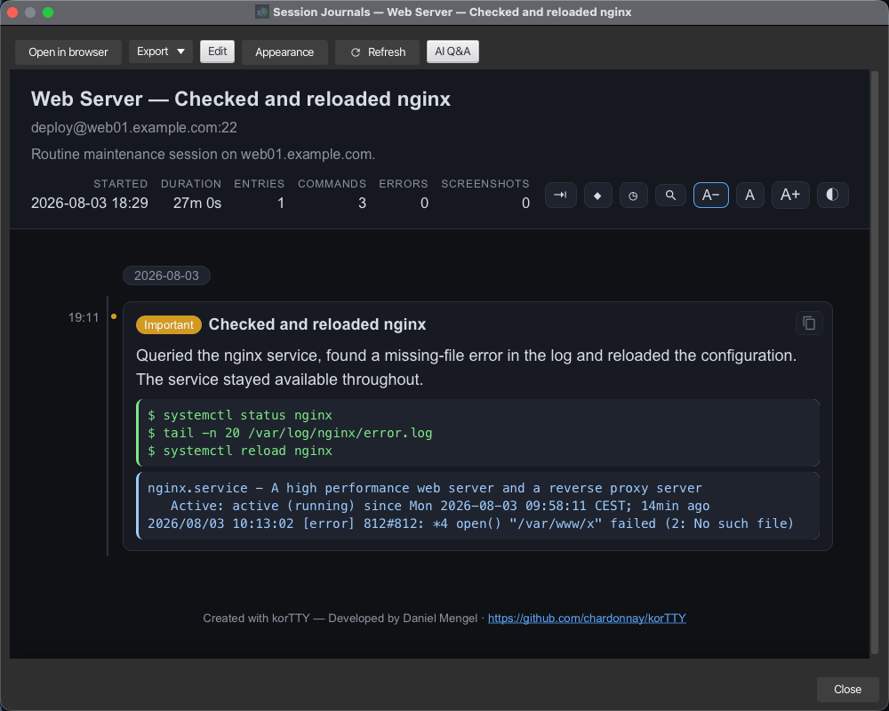
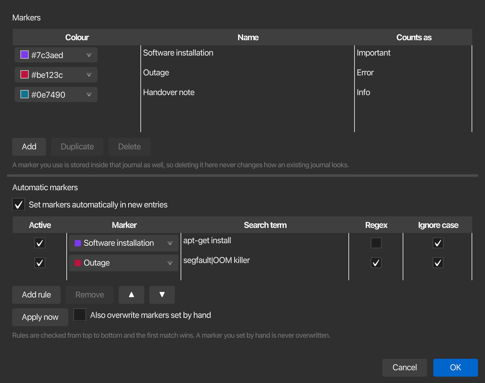

Sitzungsjournal¶
Das Sitzungsjournal dokumentiert eine Terminalsitzung als lesbare Zeitleiste: Jede Ausgabezeile des Servers und jeder von Ihnen eingegebene Befehl werden in ein Capture-Log geschrieben, eine KI komprimiert die Aktivität regelmäßig in kurze Journal-Einträge und das Ergebnis wird als eigenständige HTML-Seite mit Verbindungsdetails, farbcodierten Auszügen, Screenshots und Ihren eigenen Notizen gerendert. Journale werden wie gespeicherte Chats verwaltet – in einem eigenen Managerfenster mit Suche, Bearbeitung und Export.

Speicher und Formate¶
Jedes Journal ist ein eigenständiges Verzeichnis unter ~/.kortty/journals (konfigurierbar unter Einstellungen > Protokollierung > Sitzungsjournal):
| Datei | Zweck |
|---|---|
journal.xml |
Das kuratierte Journaldokument: Metadaten, KI-Zusammenfassungen, Markierungen, Notizen, Screenshot-Referenzen |
session-log.json / .xml / .yaml |
Das Nur-Anhängen-Capture-Log – zeitgestempelte Serverausgabe und typisierte Eingabezeilen mit Sequenz-IDs |
session-log-2.json.zst, … |
Gedrehte Stammteile; Geschlossene Teile werden automatisch zstd-komprimiert, das Journal löscht niemals den Verlauf. Mit älteren Versionen aufgezeichnete Journale behalten ihre .gz-Teile und bleiben vollständig lesbar |
journal.html |
Die generierte Timeline-Seite, die nach jeder Änderung automatisch neu generiert wird |
screenshots/*.png |
Screenshots you attached during the session |
Das Capture-Log-Format kann im Dialogfeld Optionen des Journalmanagers ausgewählt werden: JSON (JSON Lines, Standard), XML oder YAML. Alle Formate enthalten die gleichen Felder und jeder Eintrag besteht aus genau einer Zeile, sodass ein Absturz nie mehr als die letzte Zeile beschädigt. JSON ist die Standardeinstellung, weil die Protokolltools es lesen, ohne dass ein eigener Parser erforderlich ist – und nicht, weil es Platz spart. Die Größe trennt die drei kaum voneinander: Bei normaler Ausgabe ist XML etwa 9 Byte pro Eintrag kleiner, bei Ausgabe voller <, > und & ist JSON etwa 10 % kleiner (XML muss diese maskieren, JSON nicht), und sobald ein fertiger Teil komprimiert ist, liegen alle drei innerhalb von 2 % voneinander. YAML ist das größte, da es JSON-Zuordnungen mit dem Präfix - schreibt. Der aktive Protokollteil bleibt für Live-Lesevorgänge unkomprimiert; Rotation (Standard 25 MB pro Teil) und Sitzungsende komprimieren fertige Teile auf .zst (zstd – Journale aus älteren Versionen behalten ihre .gz-Teile und öffnen sich genau wie zuvor).
Zwei weitere Dinge halten lange, laute Sitzungen klein und vollständig. Aufeinanderfolgende identische Ausgabezeilen (Fortschrittsschleifen, tail -f-Wiederholungen) werden im Syslog-Stil zusammengeführt: Das erste Vorkommen wird sofort geschrieben, Folgezeilen werden gezählt und als ein Eintrag mit Wiederholungszählung gespeichert. Der Viewer zeigt einen solchen Lauf kompakt als Zeile ×12 an, während beim Kopieren oder Exportieren des Protokolls die Originalzeilen vollständig reproduziert werden. Und wenn die Serverausgabe schneller ankommt, als das Protokoll sie speichern kann, erzeugt die Erfassung einen Gegendruck, anstatt Zeilen zu verwerfen – das Terminal kann bei extremer Überlastung kurzzeitig langsamer werden, das Journal bleibt jedoch vollständig.
Die Rotation kann pro Verbindung auf der Registerkarte Journal konfiguriert werden: Maximale Größe pro Log-Teil (MB) (Standard 25) und Maximale Anzahl rotierter Log-Teile (Standard 20). Nach der konfigurierten Anzahl von Teilen stoppt die Ausgabeerfassung mit einer Notiz im Journal; Eingaben, Screenshots und Notizen werden fortgesetzt. Eine Unternehmensrichtlinie kann die Teileanzahl über max-log-parts begrenzen.
Das Journal wird aktiviert¶
Automatisch für eine Verbindung¶
- Öffnen Sie Verbindungen > Verbindungen verwalten und bearbeiten Sie eine Verbindung
- Aktivieren Sie auf der Registerkarte Journal die Option Sitzungsjournal für diese Verbindung aktivieren
- Passen Sie optional Typisierte Eingabezeilen erfassen, KI-Zusammenfassungen generieren, das Zusammenfassungsintervall pro Verbindung und das Rotationspaar Maximale Größe pro Log-Teil (MB) und Maximale Anzahl rotierter Log-Teile an.
Jede zukünftige Verbindung dieses Servers startet dann automatisch sein Journal. Das Journal übersteht erneute Verbindungen – ein Journal pro Tab-Lebensdauer, mit einer Wiederverbindungsmarkierung im Protokoll.
Rückwirkend für eine laufende Sitzung¶
Verwenden Sie Extras > Sitzungsjournal starten/stoppen (Ctrl+Alt+T), das Tab-Kontextmenü (Sitzungsjournal > Journal starten) oder die Schaltfläche Journal starten in der Journalleiste. Der vorhandene Scrollback wird zunächst als Starteinträge in das Journal importiert, sodass die Zeitleiste abdeckt, was bereits passiert ist. Anschließend wird eine Live-Aufnahme angehängt.
Die Journalleiste¶
Während ein Journal verfügbar ist, zeigt eine Leiste unter dem Terminal seinen Status an (Journal aktiv seit HH:MM) und bietet Journal stoppen, Screenshot und Notiz:
- Screenshot (Ctrl+Alt+C, auch im Rechtsklick-Menü des Terminals) erstellt einen Schnappschuss des Terminals – in einem geteilten Layout erfasst das Rechtsklick-Menü genau den Bereich unter dem Cursor – und legt ihn in der Journal-Timeline ab.
- Notiz öffnet den Notiz-Editor für eine Freitext-Bemerkung, die als eigener Timeline-Eintrag an der aktuellen Position erscheint.
Notizen schreiben¶
Notizen werden überall dort, wo sie bearbeitet werden, im selben Editor geschrieben – über die Schaltfläche Notiz in der Journalleiste, über das Live-Panel, über das Eingabeformular im Viewer, und die Screenshot-Editor:
- Das Feld enthält mindestens sechs Zeilen und die Größe des Dialogfelds kann geändert werden, sodass eine Notiz ein Absatz statt einer einzelnen Zeile sein kann.
- Links sind anklickbar. Jede
http://- oderhttps://-Adresse in einer Notiz wird zu einem Link auf der Journalseite – klicken Sie darauf und die Adresse wird in Ihrem Systembrowser geöffnet, niemals in der Journalansicht. Nur diese beiden Schemata werden jemals zu Links, und zwar nur in Texten, die Sie selbst geschrieben haben: KI-Zusammenfassungen und Terminalauszüge bleiben wörtlich. - Übersetzen übergibt die Notiz an die KI und ersetzt sie durch die Übersetzung in der neben der Schaltfläche ausgewählten Sprache. Die Liste bietet die Schnittstellensprachen und jede Sprache, für die korTTY Übersetzungen hat, und akzeptiert eine typisierte Sprache, die es nicht auflistet. Ihre Auswahl wird für die nächste Notiz gespeichert. Die Übersetzung wird auf dem Profil ausgeführt, das dem Text- und Übersetzungsprofil im KI-Manager zugewiesen ist – derselben Rolle, die auch die Übersetzung des Snippet-Editors verwendet – und fällt auf Ihr Standardprofil zurück, wenn diese Rolle nicht festgelegt ist. Der Internetzugang bleibt dabei, genau wie bei den Zusammenfassungen, deaktiviert; Cmd+Z / Ctrl+Z bringt das Original zurück. Ohne ein verwendbares KI-Profil ist die Schaltfläche deaktiviert und zeigt dies an.
Wenn die Verbindung endet¶
Ein Journal ist an seine Registerkarte gebunden, nicht an eine einzelne Verbindung. Wenn die Verbindung beendet wird, während das Journal ausgeführt wird – ein reboot, ein unterbrochenes Netzwerk oder der Server, der die Sitzung schließt –, bleibt die Registerkarte offen und eine rote Entscheidungsleiste wird angezeigt, anstatt dass sich die Registerkarte lautlos schließt:
- Reconnect stellt die Verbindung wieder her und das Journal wird einfach fortgesetzt, mit einer Wiederverbindungsmarkierung im Capture-Log. Arbeiten, die nach einem Serverneustart fortgesetzt werden, landen im selben Journal.
- Journal beenden stoppt das Journal und schreibt seine abschließende Zusammenfassung (und, falls aktiviert, den AI-Titel) genau wie die Stopp-Schaltfläche der Journalleiste. Auf der Registerkarte wird dann die einfache Leiste zum erneuten Verbinden angezeigt, so dass eine erneute Verbindung weiterhin möglich ist – wenn das Journaling für die Verbindung aktiviert ist, startet diese neue Sitzung ein neues Journal.
Wenn Sie stattdessen die Registerkarte schließen, wird auch das Journal mit seiner abschließenden Zusammenfassung beendet. Ohne laufendes Journal ist das Verhalten unverändert: Bei einer sauber beendeten Verbindung wird der Tab geschlossen, bei einem Fehler bleibt er mit der Reconnect-Leiste geöffnet (Doppelklick zum erneuten Verbinden).
Das Live-Journal-Panel¶
View > Live Journal (or Ctrl+Alt+L) docks the running journal's full journal page — the same page the Viewer zeigt – links oder rechts vom Terminal, in Echtzeit auf dem neuesten Stand gehalten. Durch Auswahl der markierten Seite im Menü wird das Bedienfeld wieder ausgeblendet. Die Trennlinie daneben passt die Breite an, und Seite und Breite werden bei jedem Neustart gespeichert.
Zwei Dinge werden während der Sitzung live aktualisiert:
- Das Live-Protokoll – Die Schaltfläche Live-Protokoll in der Kopfzeile des Bedienfelds öffnet das Protokollfeld der Seite im Folgemodus und streamt das Capture-Log, während es geschrieben wird: Befehlsausgabe, die von Ihnen eingegebenen Befehle, Notizen und Screenshot-Markierungen, jeweils mit einem Zeitstempel. Es beginnt im Verborgenen; Die Zeilen sammeln sich in beide Richtungen an, sodass beim späteren Öffnen alles angezeigt wird. Wenn Sie nach oben scrollen, wird das Folgende angehalten, wenn Sie nach unten scrollen, wird es fortgesetzt, das ✕ in seiner Ecke blendet es wieder aus (die Schaltfläche bleibt synchron) und durch Ziehen an der Oberkante wird die Höhe angepasst – was gespeichert wird. Die Ansicht behält die neuesten 5000 Zeilen; Alles bleibt im Capture-Log und in den Protokollauszügen der Eintrittskarten.
- Die Zeitleiste – neue Karten (KI-Zusammenfassungen, Notizen, Screenshots) und Änderungen werden kurz nach ihrer Ausführung angezeigt, ohne dass Sie Ihre Scrollposition verlieren. Ein terminaler KI-Agent-Lauf fügt in dem Moment, in dem er beendet ist, seine eigene KI-Agent-Karte hinzu: Ihre Eingabeaufforderung als Titel, die endgültige Antwort des Agenten als Text und eine Metazeile mit dem Modell, der Laufdauer und der gemeldeten Token-Anzahl. Lange Antworten werden zu einer Vorschau verkleinert. Klicken Sie zum Erweitern auf den Text (oder Vollständige Antwort anzeigen). Die Agentenarbeit ist Teil des Journaldatensatzes, auch wenn die Zusammenfassung den Inline-Terminaltext des Agenten als Rauschen behandelt.
Da es sich um die eigentliche Journalseite handelt, funktioniert alles, was die Viewer-Seite bietet, genau hier: Klicken Sie auf eine Eintragskarte, um den Protokollauszug anzuzeigen, durchsuchen Sie das Journal, springen Sie zwischen markierten Einträgen und klicken Sie mit der rechten Maustaste** auf einen Screenshot, um den Annotationseditor zu öffnen (Stift, Box, unlesbar, Text und eine Notiz) oder kopieren Sie ihn – das bearbeitete Bild erscheint im Panel, sobald Sie speichern. Wenn Sie mit der rechten Maustaste auf einen Eintrag klicken, steht Ihnen die gleiche Markierungsauswahl zur Verfügung wie im Viewer. Die Karten passen sich der Breite des Panels an, sodass der Text lesbar bleibt, egal wie schmal oder breit Sie ihn ziehen.
Spring zu einer Zeit¶
Die Schaltfläche ◷ in der Kopfzeile der Seite öffnet ein Zeitfeld: Geben Sie eine Zeit ein und die Zeitleiste scrollt zum nächstgelegenen Eintrag und hebt ihn kurz hervor. Die Eingabe ist nachsichtig – 19:00, 19.00, 1900 und 19 bedeuten alle dasselbe, und ein Datum kann vorangestellt werden (13.08. 19:00, 13.08.2026 19:00 oder 2026-08-13 19:00). Ohne Datum wird die Uhrzeit mit dem jeweiligen Tag jedes Eintrags abgeglichen, sodass eine Sitzung, die nach Mitternacht läuft, zum nächsten Vorkommen springt und nicht immer zum ersten Tag.
The panel's header adds the instant controls: Note and Screenshot act on the shown journal exactly like the Journalleiste – Eine von Ihnen hinzugefügte Notiz wird sowohl in der Zeitleiste als auch im Live-Protokoll angezeigt. – Live-Protokoll zeigt die Protokollansicht an oder verbirgt sie, und Viewer öffnen öffnet das vollständige Viewer-Fenster zum Bearbeiten, Suchen und Ersetzen sowie zum Exportieren. Das ⋯-Menü schaltet die Seite zwischen hell und dunkel um, aktualisiert sie und öffnet die Seite Aussehen settings.
Das Panel folgt Ihren Tabs mit einem Gedächtnis: Es zeigt das Journal des aktuellen Tabs an, und wenn Sie zwischen Tabs wechseln, schaltet es nur weiter, wenn der neu ausgewählte Tab auch ein laufendes Journal hat – andernfalls zeigt es weiterhin das Journal an, das es bereits anzeigt. Wenn das angezeigte Journal gestoppt oder sein Tab geschlossen wird, bleibt die Seite mit dem Abzeichen Journal gestoppt / Tab geschlossen sichtbar, bis Sie einen anderen Tab mit einem Live-Journal auswählen.
Alles, was angezeigt wird, hat bereits den -Passwortschutz bestanden – unterdrückte Eingaben und geschwärzte Geheimnisse erreichen das Panel nie.
KI-Zusammenfassungen¶
Während das Journal läuft, liest der AI-Summierer regelmäßig die neuesten Capture-Log-Zeilen und hängt einen kompakten Journaleintrag an (Titel, Zusammenfassung und eine vorgeschlagene Markierung: Info, wichtig oder Fehler). Standardwerte und Grenzwerte:
| Option | Wo | Default |
|---|---|---|
| Zusammenfassungsintervall | Einstellungen > Protokollierung > Sitzungsjournal (global) oder pro Verbindung | 5 Minuten |
| Max. Terminalzeilen pro KI-Auswertung | Journalmanager Optionen | 100 |
| Token-Budget für Kontextfüllung | Journalmanager Optionen, sichtbar, wenn die maximale Anzahl an Zeilen 0 beträgt | 130000 |
| Rückstand auf mehrere Prompts aufteilen (Chunking) | Journalmanager Optionen | aus |
| AI-Profil für Zusammenfassungen | Journalmanager Optionen oder Einstellungen > Protokollierung > Sitzungsjournal | Standardprofil |
| Screenshots mit KI analysieren (Beschreibung und Tags) | Journalmanager Optionen | auf |
| Semantische Journalsuche (Einbettungen) | Journalmanager Optionen | aus |
Zusammenfassungen verwenden Ihr Standard-KI-Profil, es sei denn, Sie wählen ein spezielles Journalprofil aus. Diese Auswahl ist an drei gleichwertigen Stellen verfügbar: im Dialogfeld Optionen des Journalmanagers, Einstellungen > Protokollierung > Sitzungsjournal und KI > KI-Manager > Lokale KI neben den Rollen Text und Codierung. Die Rollenprofile Text/Coding selbst werden bewusst nicht für das Journal verwendet.
Wenn Sie max Zeilen auf 0 setzen, wird auf Kontextfüllung umgeschaltet: Der Zusammenfassungstext packt so viele der neuesten Zeilen, wie in das konfigurierte Token-Budget passen. Wenn Chunking aktiviert ist, wird das gesamte Backlog verarbeitet und nicht nur das neueste Fenster – aufeinanderfolgende Fenster der konfigurierten Größe, jeweils eine KI-Eingabeaufforderung.
Warning
Chunking kann bei großen Sitzungen sehr lange dauern und wird nicht für den täglichen Gebrauch empfohlen – es ist für Power-User mit leistungsfähiger Hardware und einem leistungsstarken LLM gedacht.
Wenn die Sitzung endet, schreibt der Zusammenfassende einen abschließenden Sitzungszusammenfassung-Eintrag (was wurde erreicht, welche Fehler sind aufgetreten) und extrahiert bis zu zwölf wörtliche Schlüsselwörter – Hostnamen, Skript- und Dateinamen, Fehlerklassen – in die Journalmetadaten, wo sie vom Filter, den Schlüsselwortchips und der AI-Suche des Managers erfasst werden. Optional – Lassen Sie die KI das Journal betiteln, wenn die Sitzung endet im Dialogfeld „Optionen“ – ein abschließender KI-Aufruf benennt das Journal, es sei denn, Sie haben es manuell umbenannt.
Note
Das Journal funktioniert ohne KI: Wenn kein KI-Profil verfügbar ist, KI-Funktionen deaktiviert oder Zusammenfassungen ausgeschaltet sind, zeichnet die Zeitleiste stattdessen rohe Aktivitätseinträge auf. KI-Zusammenfassungsaufforderungen verwenden niemals Tools für den Internetzugang; Der Terminalauszug geht nur an das konfigurierte AI-Profil.
KI-Screenshot-Analyse¶
Wenn das KI-Profil des Journals Bilder akzeptiert, werden auch Screenshots analysiert: Das Modell schreibt eine kurze Beschreibung (ein bis drei Sätze) und eine Handvoll kleingeschriebene Tags, die rechts neben dem Miniaturbild auf der Journalseite angezeigt werden. Tags sind anklickbare Chips – wenn man auf einen klickt, startet ein Journalesuche für dieses Tag – und beide Texte werden durch den Suchinhalt-Scan des Managers gefunden, neu geschrieben von search and replace und die automatischen Schwärzungsregeln und sind in den Markdown- und PDF-Exporten enthalten. Wie die Zusammenfassungen werden auch die Analyseantworten in der Sprache beantwortet, in der das Journal erstellt wurde.
- Screenshots mit KI analysieren (Beschreibung und Tags) im Dialogfeld Optionen des Journalmanagers steuert die automatische Analyse bei der Erfassung (standardmäßig aktiviert). Es wird nur ausgeführt, wenn KI-Zusammenfassungen für die Verbindung aktiviert sind und das Profil Bilder aufnehmen kann. andernfalls wird der Screenshot einfach unanalysiert abgelegt.
- Screenshot mit KI analysieren im Rechtsklick-Menü eines Screenshots analysiert ein Bild bei Bedarf – die Möglichkeit, Screenshots in zuvor aufgezeichneten Journalen zu analysieren, einen fehlgeschlagenen Lauf zu wiederholen oder die Analyse erneut auszuführen, nachdem etwas im Anmerkungseditor unleserlich gemacht wurde. Die Analyse liest immer das kommentierte Bild, niemals die unberührte
.orig.png-Aufnahme.
Ob ein Profil Bilder aufnehmen kann, ist eine profilspezifische Eigenschaft: Bildeingabe (Vision) in den AI-Einstellungen. ist standardmäßig auf Auto eingestellt – für einen lokalen LM Studio-Endpunkt liest korTTY die Antwort aus den Modellmetadaten (während derselben Aktualisierung, die die Reasoning-Optionen erkennt), für Cloud-Endpunkte erkennt es die allgemeinen vision-fähigen Modellnamen – und kann mit Aktiviert/Deaktiviert für Modelle der Erkennung überschrieben werden schätzt falsch ein.
Warning
Die automatische Analyse sendet den Screenshot zum Zeitpunkt der Aufnahme – bevor Sie die Möglichkeit haben, etwas unleserlich zu machen. Das Bild geht nur an das konfigurierte KI-Profil und niemals über Internet-Zugriffstools, aber für Sitzungen, deren Bildschirminhalt den Computer nicht verlassen darf, schalten Sie die Option aus oder lassen Sie Ihren Administrator die Analyse über Enterprise Policy verbieten – die Richtlinienanweisung deaktiviert auch die manuelle Ausführung.
Die KI nach einem Journal fragen¶
AI Q&A in der Symbolleiste des Viewers öffnet ein Chat-Panel neben der Journalseite. Fragen Sie etwas zu dieser Sitzung – „Wurden Screenshots gemacht, die Fehler von result_complex.pl zeigen?“ – und die KI antwortet aus dem, was das Journal bereits während der Sitzung gesammelt hat: die KI-Zusammenfassungen, Screenshot-Beschreibungen und Tags sowie Ihre Notizen. Das Roherfassungsprotokoll wird niemals an das Modell gesendet.

Wenn für eine Frage konkrete Beweise aus dem Protokoll benötigt werden – genaue Fehlerzeilen, ob ein Skript wirklich fehlgeschlagen ist, wie oft etwas passiert ist – benennt das Modell ein paar wörtliche Suchzeichenfolgen, korTTYs eigene Streaming-Suche durchsucht das Capture-Log nach ihnen, und nur die Übereinstimmungszahlen sowie eine Handvoll Beispielzeilen werden für die endgültige Antwort an das Modell zurückgesendet. Das Panel zeigt beides neben der Antwort:
- Quellen – die in der Antwort zitierten Journal-Einträge; Wenn Sie auf eines klicken, scrollt die Zeitleiste zu diesem Eintrag.
- Protokollbeweise – pro Suchzeichenfolge die genaue Anzahl übereinstimmender Protokollzeilen, mit anklickbaren Beispielen, die das Protokollfenster öffnen und bis zur genauen Zeile scrollen.
Anschlussfragen führen das Gespräch fort (das Gremium behält die jüngsten Gespräche als Kontext bei); Neues Gespräch beginnt von vorne. Als Notiz speichern fügt ein Frage-Antwort-Paar als Eintrag an die Journalzeitleiste an, sodass ein Befund Teil der Aufzeichnung wird.
Note
Wenn kein KI-Profil erreichbar ist oder die Anfrage fehlschlägt, wird das Panel heruntergefahren, anstatt einen Fehler auszulösen: Es extrahiert die Bezeichner aus Ihrer Frage, führt die interne Textsuche durch und zeigt die übereinstimmenden Einträge und Protokollzeilen mit einem Hinweis an, dass kein Modell beteiligt war. Das Q&A verwendet niemals Tools für den Internetzugang und Administratoren können dies vollständig verbieten (ai-ask gemäß Unternehmensrichtlinie).
Passwortschutz¶
Getippte Eingaben werden nur als vollständig übermittelte Zeilen erfasst und mehrere Ebenen halten Passwörter aus dem Journal fern:
- Wenn die Serverausgabe mit einer Passwortabfrage endet (
password:,[sudo] password for …,passphrase,PINund lokalisierte Varianten), wird die nächste übermittelte Eingabezeile unterdrückt und als geschwärzter Platzhalter protokolliert – der eingegebene Text wird nie zwischengespeichert oder geschrieben. - Das eigene gespeicherte Passwort der Verbindung wird zusätzlich durch
***ersetzt, wo immer es im erfassten Text erscheinen würde. - Eingegebene Befehlszeilen erfassen kann pro Verbindung vollständig deaktiviert werden; Befehle erscheinen dann nur noch als Echo des Servers im Ausgabestream.
Warning
Bei der Prompt-Erkennung handelt es sich um eine Heuristik – ein Remote-Terminal kann nicht zuverlässig erkennen, wann der Server das Echo deaktiviert hat. Exotische oder Vollbild-Passwortabfragen werden möglicherweise nicht erkannt und in sichtbare Befehle eingefügte Geheimnisse (außer den Anmeldeinformationen der Verbindung) werden wie jeder andere Text erfasst. Behandeln Sie Protokolle sensibler Sitzungen entsprechend.
Wenn trotzdem etwas durchgerutscht ist, dann das des Viewers suchen und ersetzen removes it from the entries and the capture log after the fact. Administrators can also have korTTY redact patterns automatically — see Unternehmenspolitik unten.
Die Journalseite¶
journal.html ist vollständig eigenständig (keine externen Ressourcen) und funktioniert im integrierten Viewer, in jedem Browser und innerhalb des exportierten Bundles:
- Ein Sticky-Header zeigt an, wer mit welchem Server verbunden war, Startzeit, Dauer und Anzahl der Einträge, Befehle, Fehler und Screenshots sowie die Journalbeschreibung. Live-Journale weisen ein Live-Abzeichen auf. Die Zeile unter dem Titel enthält nur das, was der Titel nicht bereits sagt, sodass eine nach ihrem Endpunkt benannte Journal die Verbindung einmal statt dreimal angibt.
- Die Zeitleiste gruppiert Einträge nach Tag; Jeder Eintrag trägt seine Zeit, einen Markierungspunkt und ein Abzeichen in der Farbe, die Sie dieser Markierung gegeben haben, den AI-Titel und die Zusammenfassung sowie farbcodierte Eingabe- (grün) und Ausgabeauszüge (blau).
- Durch Klicken auf einen Eintrag wird von unten ein Protokollfenster mit dem genauen Capture-Logbereich hinter diesem Eintrag eingeblendet. Das Panel verfügt über eine eigene Bildlaufleiste, ein Suchfeld mit Trefferzähler und ▲/▼-Navigation (Enter / Shift+Enter zyklisch auch Treffer, Esc schließt) und färbt Eingabe- und Ausgabezeilen unterschiedlich ein.
- Screenshot-Einträge zeigen Miniaturansichten; Wenn Sie darauf klicken, wird ein Leuchtkasten in voller Größe geöffnet. Wenn die KI-Screenshot-Analyse ausgeführt wurde, befinden sich die Beschreibungs- und Tag-Chips rechts neben dem Bild, und ein Chip-Klick durchsucht das Journal nach diesem Tag.
- Die Seite wird standardmäßig dunkel gerendert, folgt der Hell/Dunkel-Einstellung des Systems und verfügt über eine eigene Designumschaltung.
- Screenshots, Auszugsfenster, die Zeitleistenspalte und das Protokollfenster passen sich dem Fenster an, sodass die Seite sowohl in einem schmalen Viewer-Tab als auch im Vollbildmodus lesbar bleibt. Lange Ausschnitte scrollen in ihrem eigenen Rahmen, anstatt die Zeitleiste zu dehnen.
Suche im Journal¶
Die Lupe in der Kopfzeile öffnet eine Suchleiste direkt unter den Verbindungsdetails (Ctrl+F funktioniert auch). Durch die Eingabe eines Begriffs oder eines ganzen Satzes wird jedes Vorkommen auf der Zeitleiste hervorgehoben – Eintragstitel, KI-Zusammenfassungen, KI-Screenshot-Beschreibungen und Tags, Ein- und Ausgabeauszüge, Notizen und Zeitstempel – und ein Übereinstimmungszähler angezeigt; ▲ und ▼ oder Enter / Shift+Enter springen zwischen den Treffern, Esc oder ✕ schließt die Leiste und löscht die Hervorhebung.
Note
This searches the journal entries. The raw capture log has its own search inside the log panel, the journal manager can search across all journals with Search contents or the KI-Sucheund des Viewers KI-Fragen und Antworten beantwortet Fragen zu dieser Journal.
Jumping between marked entries¶
When at least one entry carries a marker, the header gains a ◆ button that opens a marker bar. Pick All markers or a single one, then step through the matches with ▲ and ▼ — the list wraps around, and the current entry is scrolled into view and briefly outlined. Alt+Down and Alt+Up do the same without the mouse, and Alt+M toggles the bar; Esc closes it.
A journal without markers ships neither the button nor the bar, so the header stays as it was.
Picking a time range with the mouse¶
Inside korTTY the header also carries a ⇥ button that switches the timeline into range mode. Click the first entry, then the last one — everything between them is highlighted and the bar shows the span and how many entries it covers. The order does not matter: clicking the later entry first works just as well.
- Add another window puts the current selection aside and starts a new one, so several windows can be collected in one pass.
- Für Export verwenden öffnet den Exportdialog mit bereits ausgefüllten Fenstern.
- Cancel or Esc leaves range mode.
Wenn der Bereichsmodus aktiviert ist, wird durch Klicken auf einen Eintrag das Protokollfenster ausgewählt, anstatt es zu öffnen. In einem externen Browser fehlt die Schaltfläche, da zum Exportieren die App erforderlich ist.
In der Eingabetabelle des Bearbeitungsmodus ist das Gleiche auch ohne Zeitleiste verfügbar: Wählen Sie mehrere Zeilen aus, klicken Sie mit der rechten Maustaste und wählen Sie Auswahl als Zeitfenster übernehmen.
Inhalt wird kopiert¶
Jeder Eintrag verfügt über eine Schaltfläche zum Kopieren in der oberen rechten Ecke: Texteinträge kopieren den gesamten Eintrag, Screenshot-Einträge kopieren das Bild. Das Protokollfenster verfügt über dieselbe Schaltfläche für den Protokollabschnitt, den es gerade anzeigt.
Wenn Sie mit der rechten Maustaste auf die Seite klicken, wird ein Kopiermenü mit gezielteren Aktionen geöffnet, je nachdem, was Sie angeklickt haben:
| Aktion | Kopiert |
|---|---|
| Auswahl kopieren | Der aktuell ausgewählte Text (wird angezeigt, wenn eine Auswahl vorhanden ist) |
| Zusammenfassung kopieren | Zeit, Titel und KI-Zusammenfassung des Eintrags |
| Eintrag kopieren | Dasselbe plus die Ein-/Ausgabeauszüge und Ihre Notiz |
| Screenshot kopieren | Der Screenshot selbst, als Bild, in die Zwischenablage |
| Screenshot-Pfad kopieren | Der Pfad des Screenshots im Journalordner |
| Log-Ausschnitt kopieren | Jede Zeile des derzeit im Panel angezeigten Protokollbereichs mit Zeitstempeln |
In korTTY verwenden die Kopieraktionen die Zwischenablage der App, sodass Bilder in der Zwischenablage des Systems landen und zum Einfügen bereit sind. In einem externen Browser wird der Text weiterhin normal kopiert; Das Kopieren eines Bildes kann auf seinen Pfad zurückgreifen, da Browser das Lesen lokaler Bilddaten von einer file://-Seite blockieren.
Aussehen¶
Die Schaltflächen A−, A und A+ im Seitenkopf skalieren die gesamte Seite zwischen 70 % und 250 %. korTTY merkt sich die Größe und wendet sie auf jede anschließend gerenderte Journalseite an, sodass eine Seite, die neu generiert wird (eine neue KI-Zusammenfassung, eine bearbeitete Markierung), wieder die von Ihnen gewählte Größe hat. Wenn die Seite eigenständig in einem Browser geöffnet wird, merkt sie sich stattdessen die Größe pro Browser.
Die Darstellung-Schaltfläche des Viewers öffnet ein kleines Fenster mit dem Rest:
| Einstellung | Wirkung |
|---|---|
| Farbschema | Automatisch behält das eigene Dunkel/Hell-Paar der Seite bei und folgt dem Betriebssystem. Dem Terminal-Theme folgen leitet die Seitenfarben vom Hintergrund und Vordergrund Ihres Terminals ab. Die übrigen Einträge (Paper, Midnight, Ocean, Forest, Retrowave, High contrast) sind feste Paletten. |
| Textschrift | Die Schriftart für Überschriften, Zusammenfassungen und Notizen. (Standard) stellt die Standardschriften der Seite wieder her. |
| Festbreitenschrift | Die Schriftart für die Ein-/Ausgabeauszüge und das Protokollfenster. |
| Textgröße | Die gleichen 70–250 % wie die Tasten A−/A/A+. |
Änderungen werden sofort im Viewer in der Vorschau angezeigt und für jede Journalseite gespeichert. Bei einem festen Schema bleibt der ◐-Schalter der Seite sichtbar, ist jedoch deaktiviert, da das Schema bereits über die Farben entscheidet.
Journale verwalten¶
Tools > Sitzungsjournale… (Ctrl+Alt+J) öffnet den Journalmanager: alle Journale in einer Tabelle, sortiert nach Startzeit (neueste zuerst) mit Dauer, Verbindung, Server, Titel und Eintragsanzahl. Laufende Journale sind markiert und können im laufenden Betrieb weder umbenannt noch gelöscht werden.

- Das Filterfeld entspricht Titel, Verbindung, Host, Benutzer, Beschreibung und den AI-Schlüsselwörtern. Wenn Sie Inhalte durchsuchen aktivieren, werden zusätzlich die Journaleinträge gescannt – einschließlich AI-Screenshot-Beschreibungen und Tags – und Protokolle jedes Journals werden im Hintergrund erfasst (die Protokolle werden Teil für Teil per Streaming gelesen, sodass selbst große Journale nicht in den Speicher geladen werden).
- Unterhalb des Filterfelds zeigen anklickbare Keyword-Chips die häufigsten KI-Keywords in den aufgelisteten Journale an – wobei genau eine Journal ausgewählt ist, also die eigenen Keywords dieser Journal. Durch Klicken auf einen Chip wird nach ihm gefiltert. Die Schlüsselwörter stammen aus der Zusammenfassung der Abschlusssitzung, die bis zu zwölf wörtliche Suchbegriffe (Hostnamen, Skript- und Dateinamen, Fehlerklassen) in die Metadaten des Journals extrahiert.
- Öffnen (oder Doppelklick) öffnet den Journal-Viewer; Umbenennen ändert den Titel; Löschen fragt nach einer Bestätigung und entfernt dann dauerhaft den Journalordner einschließlich des Protokolls und aller Screenshots.
- Es können mehrere Journale gleichzeitig ausgewählt werden (Klick Ctrl / Shift), um sie in einem Schritt zu löschen oder zu exportieren. Laufende Journale können nicht umbenannt oder gelöscht werden.
- Der Bereich Beschreibung unterhalb der Tabelle speichert eine Freitextbeschreibung pro Journal; Es erscheint auf der Journalseite und in jedem Export und wird in die Inhaltssuche einbezogen.
- Optionen enthält die oben beschriebenen globalen Erfassungs- und KI-Einstellungen sowie Zusammenfassungen aufholen: Es zählt die geschlossenen Journale, die nie zusammengefasst wurden (aufgezeichnet, während Zusammenfassungen deaktiviert waren oder kein Modell erreichbar war) und führt bei Bedarf die reguläre Zusammenfassung nacheinander hinter einem Fortschrittsdialog aus – zwischen Journalen abbrechbar, und ein unterbrochener Lauf wird an der Stelle fortgesetzt, an der er gestoppt wurde.
AI-Suche in allen Journale¶
KI-Suche neben dem Filterfeld öffnet ein Suchfeld unter der Tabelle. Stellen Sie eine Frage zu jedem gespeicherten Journal – „In welchen Journalen wurde result_complex.pl mit einem Fehler beendet?“ – und korTTY antwortet in zwei Schritten: Ein schnelles lokales Ranking wählt die relevantesten Journale aus ihren Metadaten und gesammelten Einträgen aus, dann schreibt eine einzige KI-Anfrage über diese Kandidaten die Zusammenfassung und wählt die Journale aus, die die Frage tatsächlich beantworten. Wie beim per-Journal Q&A sieht das Modell immer nur die gesammelten Einträge, niemals die Capture-Loge; Die genauen Protokollpositionen stammen aus der internen Streaming-Suche.

Das Ergebnis erscheint auf beiden Seiten des Panels:
- Der Antwort-Chat auf der linken Seite unterstützt Folgefragen zu denselben Ergebnissen.
- Der Trefferbaum auf der rechten Seite listet jedes übereinstimmende Journal mit seiner Gesamttrefferzahl auf (bewegen Sie den Mauszeiger, um den Ein-Satz-Grund der KI anzuzeigen) und darunter die einzelnen Treffer – übereinstimmende Einträge und genaue Protokollzeilen mit Zeitstempel und Snippet. Ein Klick auf einen Treffer öffnet das Journal und springt direkt zu diesem Eintrag oder dieser Protokollzeile. Treffer, die Sie bereits geöffnet haben, werden mit einem Häkchen gedämpft, und diese Markierung übersteht neue Suchvorgänge und Neustarts – Orientierung für das Durcharbeiten einer langen Trefferliste.
- In der Kopfzeile wird die Gesamtsumme angezeigt: n Treffer in m Journale. Wiederholte identische Ausgabezeilen werden zusammengeführt gespeichert und die Zählung umfasst ihre Wiederholungsfaktoren, sodass sie reale Vorkommnisse widerspiegelt.
Die Tabelle selbst bleibt vollständig: Journale mit Treffern erhalten eine sortierte Spalte Treffer und eine Zeilenhervorhebung, anstatt alles andere wegzufiltern. Nur Auswahl beschränkt die Suche auf die in der Tabelle ausgewählten Journale.
Note
Ohne ein erreichbares KI-Profil funktioniert die Suche weiterhin: Die Identifikatoren der Frage werden direkt mit den Journalen und Protokollen abgeglichen, nur die KI-Zusammenfassung und die Journalauswahl werden übersprungen (so steht es in einem Hinweis). Optional fügt die Semantische Journalsuche im Dialogfeld „Optionen“ ein einbettungsbasiertes Ranking zusätzlich zum lexikalischen hinzu – es erfordert ein lokales Einbettungsmodell, das in den Wissensspeichern konfiguriert ist, und greift stillschweigend auf das lexikalische Ranking zurück, wenn keine Einbettungen verfügbar sind.
Der Viewer und die Bearbeitung¶

Der Viewer zeigt die Journalseite in einem eingebetteten Browser an und aktualisiert sich automatisch, während das Journal noch geschrieben wird. Im Browser öffnen übergibt die Seite an Ihren Systembrowser. Bearbeiten teilt die Ansicht: eine Eintragstabelle neben einem Formular mit dem Titel, der Zusammenfassung des Eintrags, einer Markierungsauswahl und einem Notizenfeld. Durch die Bearbeitung können Sie Einträge korrigieren oder kategorisieren – Fehler kennzeichnen, wichtige Ergebnisse hervorheben oder eine Zusammenfassung neu schreiben. Beim Speichern wird die Seite an der Position des bearbeiteten Eintrags neu generiert; Eine von Ihnen manuell gesetzte Markierung wird niemals von der KI oder einer Regel überschrieben.
Der schnellste Weg, einen einzelnen Eintrag zu markieren, ist die Zeitleiste selbst: Klicken Sie mit der rechten Maustaste darauf und wählen Sie Marker setzen….
Screenshot-Notizen und Anmerkungen¶
Ein Screenshot allein sagt selten aus, warum er aufgenommen wurde. Wenn Sie mit der rechten Maustaste auf eines davon klicken – das Miniaturbild in der Timeline oder den Leuchtkasten in voller Größe – bietet es zwei eigene Aktionen:
| Aktion | Was es bewirkt |
|---|---|
| Screenshot bearbeiten… | Öffnet den unten beschriebenen Editor |
| Screenshot mit KI analysieren | Läuft die KI-Screenshot-Analyse für dieses Bild; Wird angeboten, wenn ein bildfähiges KI-Profil konfiguriert ist und die Richtlinie die Analyse zulässt |
| Screenshot exportieren… | Speichert das Bild mit seinen Markierungen in einer von Ihnen ausgewählten Datei. |
Edit and export also sit in the context menu of the edit mode's entry table, and double-clicking a screenshot row opens the editor directly. These actions only appear inside korTTY: a standalone page in a browser can neither rewrite the journal nor reach a file dialog.
Inside korTTY the journal's title is editable from the page too: double-click it, or right-click it and choose Rename journal… — the same rename the manager offers, subject to the same organisation policy.
The editor itself:
| Tool | What it does |
|---|---|
| Pen | A thick freehand stroke for circling or underlining something |
| Box | A rectangle you drag to whatever size you need |
| Unreadable | A rectangle whose contents are coarsened into blocks until they cannot be read — for hiding a value while leaving the surrounding context in place. Width sets how coarse the blocks are. |
| Text | A label with a dark halo, so it stays readable on a light terminal background |
Colour applies to the next mark (red to start with), Width sets the pen thickness and scales the text labels with it. Undo removes the last mark, Remove all clears them. Below the picture sits a five-line Note field for the remark that belongs to the screenshot; it is the same note the entry carries elsewhere in the journal.
Markierungen werden als Daten gespeichert und können jederzeit erneut bearbeitet werden – beim erneuten Öffnen des Editors werden sie erneut angezeigt und nicht als abgeflachtes Bild. Die markierte Version wird zum Bild, das in der Zeitleiste, im PDF, im Markdown-Export und im HTML-Bundle angezeigt wird. Die nicht markierte Aufnahme verbleibt im Journalordner als shot-000004.orig.png.
Warning
Annotation draws on top of the picture — Unreadable included. It is not redaction. The unmarked capture remains on this machine inside the journal folder as shot-000004.orig.png. It is never copied into an export, so a box you drew over something sensitive does hold in an exported document, but anyone with access to the journal folder itself can still open the original. To remove something from a journal for good, use Search and replace or the redaction rules — and delete the .orig.png by hand if a screenshot is the problem.
Markers¶

Über die vier integrierten Markierungen hinaus (Keine, Info, Wichtig, Fehler) können Sie Ihre eigenen Markierungen definieren – einen Namen wie Softwareinstallation und eine Farbe Ihrer Wahl. Markierungen verwalten… neben der Markierungsauswahl öffnet den Editor:
- Farbe, Name und Zählt als. Der letzte entscheidet, auf welchen integrierten Wert der Marker herabgestuft wird, was dafür sorgt, dass ein Journal in einem älteren korTTY lesbar bleibt und was dafür sorgt, dass ein Outage-Marker zur Fehlersumme zählt.
- Add, Duplicate and Delete. Deleting also removes the rules that pointed at that marker, so no rule is left silently doing nothing.
Markierungen leben in Ihren Einstellungen und sind in jedem Journal verfügbar. Eine von Ihnen tatsächlich verwendete Markierung wird zusätzlich in diesem Journal gespeichert, sodass ein exportiertes oder freigegebenes Journal automatisch in den richtigen Farben gerendert wird – und das spätere Löschen einer Markierung ändert nie das Aussehen eines vorhandenen Journals.
Automatische Markierer¶
Die untere Hälfte desselben Dialogs enthält Regeln, die selbst Markierungen setzen. Aktivieren Sie Markierungen automatisch in neuen Einträgen setzen und fügen Sie dann eine Regel pro Suchbegriff hinzu:
| Spalte | Bedeutung |
|---|---|
| Aktiv | Ob die Regel überhaupt angewendet wird |
| Marker | Welcher Marker gesetzt werden soll |
| Suchbegriff | Ein Wort oder ein ganzer Satz; Wenn Regex deaktiviert ist, entspricht es buchstäblich |
| Regex | Behandeln Sie den Suchbegriff als regulären Ausdruck |
| Groß-/Kleinschreibung ignorieren | Standardmäßig aktiviert |
Die Regeln werden von oben nach unten überprüft und das erste Spiel gewinnt – verwenden Sie ▲/▼, um sie zu ordnen. Sie sehen sich den Titel, die Zusammenfassung, die Notiz und die Ein-/Ausgabeauszüge des Eintrags an, niemals das Roherfassungsprotokoll, und sie folgen den Schwärzungsregeln, sodass ein geschwärztes Geheimnis niemals eines auslösen kann.
Eine von Ihnen manuell gesetzte Markierung wird niemals überschrieben; ein Marker, der von der KI vorgeschlagen wurde. Jetzt anwenden führt die Regeln für das aktuell geöffnete Journal aus und meldet, wie viele Einträge sich geändert haben – das funktioniert auch, während die Sitzung noch läuft. Aktivieren Sie Auch manuell gesetzte Markierungen überschreiben nur dann, wenn Sie wirklich möchten, dass Ihre eigenen Auswahlen ersetzt werden.
Suchen und ersetzen¶
Durch die Suche wird ein Begriff gefunden. Suchen & ersetzen schreibt jedes Vorkommen neu. Verwenden Sie es, um etwas zu löschen, das nicht im Journal bleiben darf – ein in einen sichtbaren Befehl eingefügtes Passwort, ein Token in einer Serverantwort – oder einfach um ein wiederkehrendes Wort zu korrigieren.
Sie ist an zwei Stellen erreichbar: über die Schaltfläche Suchen & ersetzen… im Bearbeitungsmodus und über die Schaltfläche Ersetzen… in der Suchleiste auf der Journalseite, die denselben Dialog mit dem bereits eingegebenen Begriff öffnet, nach dem Sie gesucht haben. Diese Schaltfläche erscheint nur in korTTY – die Seite wird aus den Journaldateien generiert, sodass eine in einem Browser geöffnete Kopie suchen kann, aber keine Möglichkeit hat, etwas umzuschreiben.
| Option | Wirkung |
|---|---|
| Suchen nach / Ersetzen durch | Der zu suchende Text und was an seiner Stelle eingefügt werden soll (standardmäßig ***) |
| Regulärer Ausdruck | Behandelt den Suchtext als regulären Ausdruck; $1 im Ersatz fügt eine erfasste Gruppe ein |
| Groß-/Kleinschreibung ignorieren | Entspricht jeder Groß-/Kleinschreibung |
| Capture-Log ebenfalls umschreiben | Standardmäßig aktiviert. Aus ändert nur die Journaleinträge und lässt das Capture-Log unberührt |
| Treffer zählen | Ein Probelauf über das echte Journal: Gibt an, wie viele Eintragsfelder und Protokollzeilen sich ändern würden, ohne etwas zu schreiben |
Das Ersetzen umfasst jeden Eintragstitel, jede KI-Zusammenfassung, jede Notiz und jeden Auszug sowie – sofern Sie es nicht deaktiviert haben – jeden Teil des Capture-Logs, einschließlich der komprimierten Teile. Der Dateikopf und jede unberührte Zeile bleiben exakt erhalten, sodass das Protokoll seine Struktur behält.
Warning
Durch das Ersetzen werden die vorhandenen Journaldateien neu geschrieben und können nicht rückgängig gemacht werden. Verwenden Sie zuerst Treffer zählen, insbesondere bei einem regulären Ausdruck. Dokumente, die Sie bereits exportiert haben, sind separate Dateien und werden nicht geändert – exportieren Sie sie anschließend erneut. Ein Journal, das noch geschrieben wird, kann nicht neu geschrieben werden; beenden Sie zunächst die Sitzung.
Der Suchtext wird niemals in korTTYs eigenes Protokoll geschrieben, da er für eine Schwärzung das Geheimnis ist.
Eintrag wird gelöscht¶
Eintrag löschen entfernt nach einer Bestätigung den ausgewählten Timeline-Eintrag und damit auch die Bilddatei eines Screenshot-Eintrags. Das Capture-Log wird nicht berührt. Um einen Text auch von dort zu entfernen, verwenden Sie „Suchen und Ersetzen“.
Exportieren¶
Das Exportieren-Menü im Manager und im Viewer bietet drei Formate:
| Format | Inhalt |
|---|---|
| Das einfache Journal: Kopfzeile mit Verbindungsdetails und Statistiken, nach Tagen gruppierte Einträge mit Markierungsplaketten, Eingabe-/Ausgabeauszüge, Notizen – und, falls ausgewählt, verkleinerte eingebettete Screenshots | |
| Markdown | Das gleiche einfache Journal als .md-Datei; Screenshots werden in einen benachbarten Ordner <name>-files/ kopiert |
| HTML-Bundle (vollständig) | Ein Zip-Archiv des gesamten Journals – journal.html, journal.xml, die dekomprimierten Aufnahmeprotokolle und alle Screenshots – so angeordnet, dass die Seite sofort nach dem Entpacken funktioniert |
PDF und Markdown fragen, ob Screenshots enthalten sein sollen.
Es wird nur ein Teil eines Journals exportiert¶

Der Exportdialog kann eingrenzen, was tatsächlich in das Dokument gelangt. Jeder Filter ist optional und in der Fußzeile wird live gezählt, wie viele Einträge exportiert werden.
Zeitfenster. Fügen Sie so viele hinzu, wie Sie möchten; Ein Eintrag muss nur in einen davon fallen, daher exportiert 08:00–12:00 plus 14:00–16:00 beide Blöcke eines Tages. Wenn Sie die Datumsangaben leer lassen, wird das Fenster auf jeden Tag angewendet, den das Journal umfasst, und ein Fenster, dessen Beginn nach seinem Ende liegt, läuft über Mitternacht.
Die Zeiten können ungefähre Angaben sein – das ist der Punkt:
- Die Eingabe ist fehlerverzeihend:
8,08,8:00,8.30und0800funktionieren alle. - Jedes Fenster wird um die Toleranz erweitert (standardmäßig ± 5 Minuten, für genaue Grenzen auf 0 setzen).
- Ein Eintrag fasst alles seit dem vorherigen zusammen, sodass ein um 12:03 Uhr geschriebener Eintrag, der 11:58 Uhr abdeckt, immer noch zu einem Fenster gehört, das um 12:00 Uhr endet. Ohne das würde der Eintrag an der Grenze – normalerweise der interessante – aus jedem Fenster fallen.
Thema. Ein Wort oder ein Satz, abgeglichen mit Titeln, Zusammenfassungen, Notizen und Auszügen; Regulärer Ausdruck wechselt zum Regex-Matching. Lassen Sie die KI die Einträge auswählen übergibt das Thema und die Einträge stattdessen an die KI, die findet, dass Apache installiert wird, auch wenn keines dieser Wörter wörtlich vorkommt. Es benötigt ein KI-Profil und ist ansonsten ausgegraut; Wenn das Modell nicht erreichbar ist oder mit Unsinn antwortet, greift der Export auf die Textübereinstimmung zurück und sagt dies, anstatt fehlzuschlagen.
Markierungen. Alle Einträge, nur markierte oder nur die Markierungen, die Sie ankreuzen. Die Liste zeigt die Markierungen, die das Journal tatsächlich verwendet.
Filtered HTML bundles¶
Ohne Filter bleibt das HTML-Bundle die wörtliche Kopie, die es immer war. Mit einem wird es neu aufgebaut:
journal.xmlholds only the exported entries, and the marker definitions travel with them.- Das Capture-Log wird auf die Sequenzbereiche umgeschrieben, auf die sich diese Einträge beziehen, und auf die angeforderten Zeitfenster zugeschnitten. Dies ist nicht optional – ein Bundle ist das Artefakt, das Sie jemand anderem geben, und zwölf Einträge neben acht Stunden Terminalausgabe wären genau das Leck, das der Filter verhindern soll.
- Only the screenshots still referenced are copied, and
journal.htmlis re-rendered so its deep links resolve. - Die Header-Zählungen werden neu berechnet, um mit den Angaben im Bundle übereinzustimmen.
Jeder gefilterte Export – PDF, Markdown und Bundle gleichermaßen – trägt ein Auszug-Banner mit dem Namen des Bereichs und der Eintragsanzahl, sodass niemand es mit der gesamten Sitzung verwechselt.
Exporting several journals¶
Wenn mehr als ein Journal ausgewählt ist, erstellt der Export ein einzelnes ZIP-Archiv, das jedes Journal separat hält: ein PDF- oder Markdown-Dokument pro Journal oder ein Ordner pro Journal für das HTML-Bundle. Namen werden aus den Journaltiteln übernommen, mit einem numerischen Suffix, wenn zwei Titel kollidieren.
Filter gelten für jede ausgewählte Journal. Ein Journal, in dem der Filter mit nichts übereinstimmt, wird übersprungen und anschließend gemeldet, sodass ein leeres Ergebnis einen Export von zehn Journalen nicht zum Scheitern bringen kann; Nur wenn jedes Journal leer ausgeht, wird der Export abgelehnt – bevor eine Datei geschrieben wird.
Jedes Archiv – einschließlich des HTML-Bundles eines einzelnen Journals – kann mit einem Passwort geschützt werden. Die Option befindet sich im Exportdialog und verschlüsselt das Archiv mit AES-256; ohne sie wird das Archiv unverschlüsselt geschrieben. Da Journale vollständige Terminal-Mitschriften enthalten, ist die Wahl eines ungeschützten Archivs eine bewusste Wahl.
Warning
Das Passwort wird nirgendwo gespeichert. korTTY kann ein verschlüsseltes Archiv nicht wiederherstellen, wenn Sie es verlieren.
Fußzeile und Wasserzeichen¶
Standardmäßig enthält jedes exportierte Dokument eine Fußzeile, die angibt, dass es mit korTTY erstellt wurde, mit einem Link zum Projekt-Repository – unten auf jeder PDF-Seite, am Ende der Markdown-Datei und in der Fußzeile der Journalseite innerhalb des HTML-Pakets. PDFs können zusätzlich ein diagonales Wasserzeichen tragen, das standardmäßig deaktiviert ist.
Beide werden unter Konfiguration → Globale Einstellungen → Export konfiguriert, wo Sie den Fußzeilentext ändern, die Fußzeile ausschalten, das Wasserzeichen aktivieren und dessen Text und Farbe auswählen können. Die gleichen Einstellungen gelten für AI-Chat-Exporte.
Unternehmensrichtlinie¶
Administratoren können die Funktion verweigern (session-journal unter [rule.features]) oder ihr Verhalten über vorschreiben [rule.session-journal]: Erzwingen Sie ein Journal für jede Verbindung, korrigieren Sie das Protokollformat, das AI-Zeilenfenster oder das Speicherverzeichnis, verbieten Sie das Umbenennen oder Löschen von Journalen, schreiben Sie eine Benennungsvorlage vor, erzwingen Sie den abschließenden AI-Titel, erzwingen Sie die KI-Screenshot-Analyse ein oder aus – ein erzwungenes Aus deaktiviert auch die manuelle Ausführung pro Screenshot – und verbietet die On-Demand-KI über Journalinhalte (ai-ask = false entfernt die des Viewers Frage-und-Antwort-Runde und die des Managers KI-Suche wobei die Zusammenfassungen unberührt bleiben). Siehe Richtlinienkonfiguration für die Schlüssel.
Automatische Schwärzung¶
Eine [[rule.session-journal.replace]]-Liste sorgt dafür, dass korTTY das Suchen und Ersetzen automatisch anwendet, mit regulären Ausdrücken, wenn der Administrator dies wünscht – für Cloud-Zugriffsschlüssel, interne Hostnamen, Ticketnummern und alles, was niemals in einem Transkript landen darf:
[[rule.session-journal.replace]]
pattern = "AKIA[0-9A-Z]{16}"
replacement = "***AWS-ACCESS-KEY***"
regex = true
label = "AWS access keys"
Diese Regeln werden im Capture-Thread ausgeführt, bevor eine Zeile geschrieben wird, sodass ein übereinstimmender Text überhaupt nicht in die Protokolldatei gelangt. Sie werden auch auf KI-Zusammenfassungen und -Notizen angewendet. Es gilt jede Regel jeder übereinstimmenden Richtlinienstufe – eine Regel, die ein Muster hinzufügt, schaltet niemals ein anderes aus. Im obigen Dialog erfahren Sie, wie viele vorgeschriebene Regeln in Kraft sind. Journale, die vor dem Inkrafttreten einer Regel geschrieben wurden, werden nicht rückwirkend umgeschrieben; Verwenden Sie für diese Suchen und Ersetzen. Siehe Richtlinienkonfiguration für jeden Schlüssel.